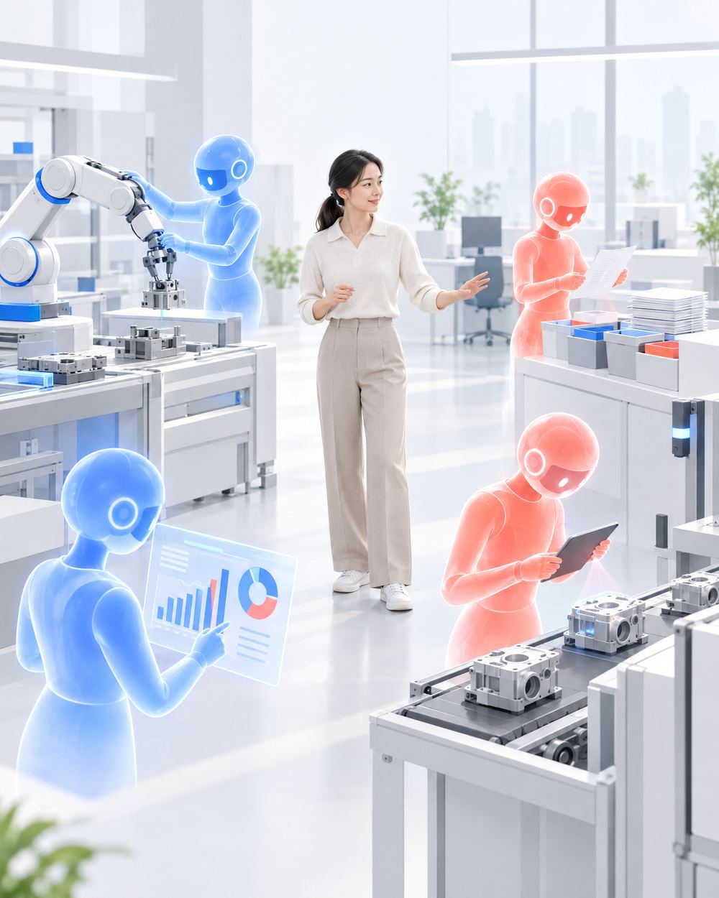
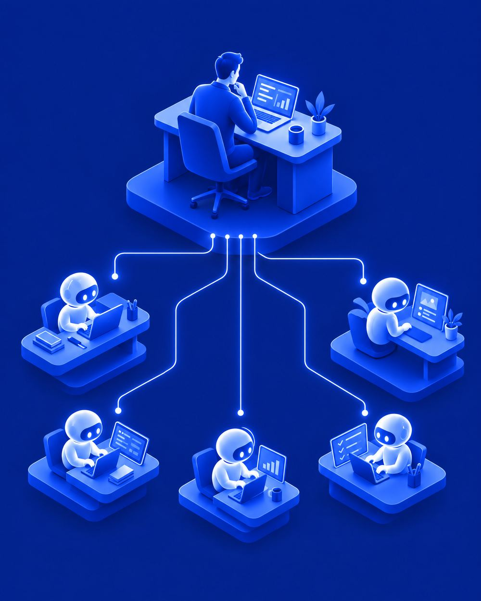
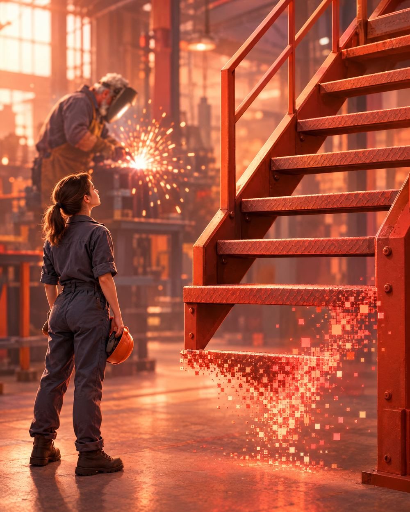
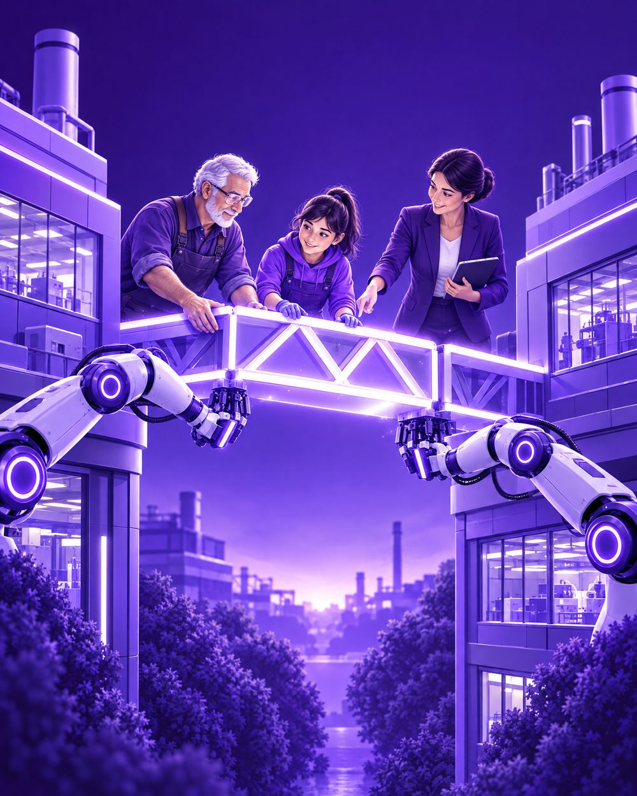
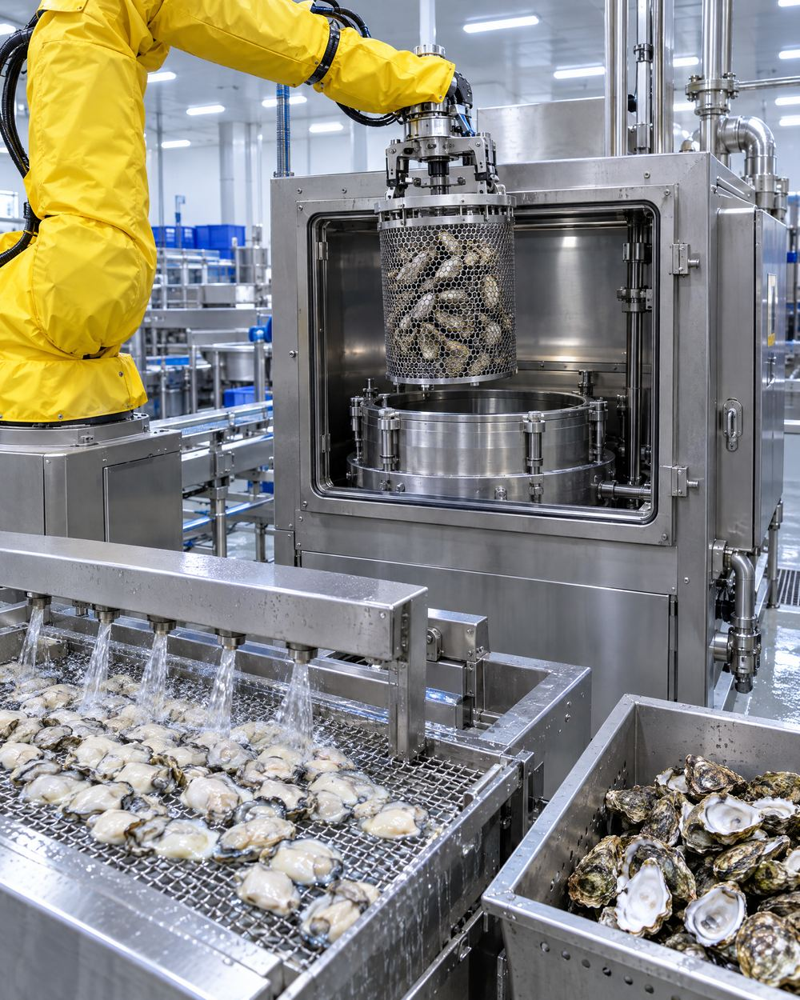

오늘 강연을 한 문장으로
2026년 9월 29일 오픈AI는 컴퓨터를 꺼 둬도 대신 일하는 에이전트 '닷츠'를 발표했습니다. 검색의 시대, 대화의 시대를 지나 이제 위임의 시대입니다.
AI 팀원을 거느린 한 사람. 조직 입장에서 그 사람은 곧 한 팀입니다.

마이크로소프트가 붙인 이름입니다. AI 에이전트를 만들고, 일을 맡기고, 관리하는 사람. 조직도(Org Chart) 대신 일의 흐름도(Work Chart)로 조직을 다시 그리게 됩니다.
출처: Microsoft Work Trend Index 2026 (2026.5)
직업 이름은 그대로입니다. 품질 엔지니어는 여전히 품질 엔지니어예요. 그런데 하루에 하는 일의 위치가 올라갑니다. 위로 갈수록 사람에게는 판단과 책임이 남습니다.
Author → Editor → Director → Orchestrator · 출처: Microsoft, How Frontier Firms are rebuilding the operating model (2026.5)
프롬프트 시대가 '한 번 잘 묻기'였다면 에이전트 시대는 '일을 잘 맡기기'입니다. 신입사원에게 일을 주는 좋은 팀장의 조건과 똑같습니다.
질문 대신 일감을 줍니다. 목표, 제약, 성공 기준을 분명히 합니다.
AI가 해 온 결과가 쓸 만한지 가려냅니다. 전문성의 가치는 이제 실행보다 감별에 있습니다.
읽기는 넓게, 실행은 좁게. 결제·발송 직전엔 사람이. 한도를 넘으면 멈춘다. 처음 며칠은 지켜본다.
에이전트 시대에는 우리 모두가 1인 팀장이 됩니다. 부하 직원 자리에 사람 대신 AI가 앉을 뿐입니다.
무엇을 시킬지보다 언제 멈추게 할지가 더 중요합니다. 시키는 말보다 막는 권한을 먼저 정해 두세요.
이 강연의 오프닝 영상도 에이전트 팀이 만들었습니다. 10월 6일 밤 "너가 한번 영상을 만들어봐" 한 마디가 시작이었습니다.
과제마다 주담당 한 명을 정했습니다.
한 에이전트가 "다 만들었다"고 하자, 다른 에이전트가 "아직 통과할 수 없습니다"라며 돌려보냈습니다.
저는 방향을 주고, 의심하고, 다시 맡기고, 마지막에 확정했습니다.
'다 만들었습니다'와 '쓸 수 있습니다' 사이를 확인하는 사람이 필요합니다. 그게 에이전트 보스의 일입니다.
제조·ICT 현장에서 이미 보이는 변화입니다.

자료 찾고, 요약하고, 초안 쓰는 일. AI가 가장 잘하는 일이 신입이 하던 일이었습니다. 그 칸이 빠지면 경력자는 어디서 나올까요?
출처: Brynjolfsson·Chandar·Chen, Canaries in the Coal Mine?, Stanford Digital Economy Lab (2025.8)
2026년 7월 9일 산업전환 고용안정 기본계획은 AI 전환·기후 위기·인구 감소를 '삼중 위기'로 보고, 일자리가 사라지고 생기는 흐름을 실시간으로 보는 대시보드를 만들기로 했습니다. 2030년까지 100만 명 이상 AI 직업훈련 계획도 이어집니다.
출처: 고용노동부 산업전환 고용안정 기본계획(2026.7.9), AI+ 역량 UP 프로젝트(2025.12)
불꽃 색만 보고 온도를 아는 감각. 매뉴얼로 못 적는 이 지식을 '암묵지'라고 부릅니다. 정부는 이를 AI로 남기는 사업을 시작했고(2026년 480억 원, 2027년 예산안 2,900억 원), 9월 울산포럼 패널은 이렇게 진단했습니다.
수도권 AI 인재를 데려오기보다 제조 10년 차에게 데이터와 AI를 더했을 때 성과가 더 안정적이었다.
5년 안에 정년을 맞는 숙련공의 판단 기준은 지금 남기지 않으면 회수할 수 없다.
데이터 라벨러가 아니라 AI 검증자, 공정 지식 큐레이터가 되어야 한다.
출처: 헤럴드경제(2026.4.27), 산업부 2027 예산안, 2026 SK 울산포럼 세션1 패널 발언(2026.9.11)
"AI는 말 그대로 모든 일자리를 바꿀 겁니다." 월마트 CEO 더그 맥밀런
출처: The New York Times 보도(2025.10), Fortune(2025.9.30), IT Brew(2026.6.12)
마이크로소프트가 AI 성과를 가르는 요인을 분석했더니 조직 요인(문화·관리자·인재 운영)이 개인 요인보다 두 배 넘게 컸습니다. 한국은 그 틈이 더 큽니다. 뒤처질까 두렵다는 직원은 78%인데, 경영진의 AI 전략이 분명하다는 응답은 16%입니다. HRD는 변방의 지원 부서가 아니라 AI 전환의 한가운데에 있습니다.
가장 비싼 GPU를 사기 전에, 사람을 다루는 방식부터 손봐야 합니다.
출처: Microsoft Work Trend Index 2026 (2026.5), 한국 결과는 헤럴드경제(2026.6.14). 67:32는 설명된 분산의 비중이며 인과 관계를 뜻하지는 않습니다.
100만 명 훈련의 목표를 다시 정하는 실행 전략입니다.

직무 이름은 그대로 두고 능력단위를 세 칸으로 나눕니다. NCS와 훈련 기준의 능력단위마다 '위임과 검수' 요소가 들어가야 합니다.
AI가 신입의 첫 과제를 가져갔다면 다른 첫 과제가 필요합니다. AI가 해 온 결과를 비교하고 고치고 근거를 대는 '검수 견습'을 현장 실습과 일학습병행에 넣습니다.
은퇴 전 5년이 골든타임입니다. 판단 기준과 현장 기록을 남기고, 구조화하고, AI와 로봇에 가르치고, 신규 기술자 교육에 다시 씁니다. 사 놓기만 하고 가르치지 않으면 로봇은 움직이지 않습니다. 로봇의 교재는 공장에 있습니다.
관리자가 AI를 먼저 쓰면 직원의 비판적 사고는 +22%p, 에이전트에 대한 신뢰는 +30%p 오릅니다. AI를 가장 앞서 쓰는 직원들의 85%는 AI를 공개적으로 쓰는 관리자 밑에 있었습니다.
처방 4 출처: Microsoft Work Trend Index 2026 (2026.5)
처방 1을 지금 해 봅니다. 내 직무(또는 우리 산업의 대표 직무)의 일을 세 칸으로 나눠 적어 보세요. 입력한 내용은 이 기기에만 저장됩니다.
몇 명이 이수했는지는 시작일 뿐입니다. 마일리지는 타 본 사람에게만 쌓이듯, AI도 먼저 자주 맡겨 본 사람에게만 경험이 쌓입니다.
우리 산업에서 AI가 가장 먼저 가져간 신입의 일은 무엇이고, 그 자리에 어떤 첫 과제를 놓을 것인가
은퇴 전 5년, 누구의 암묵지부터 남길 것인가
NCS와 훈련 기준에 '위임과 검수'를 어떻게 넣을 것인가

7년 전 EBS 영상 제목과 2026년 2월 EBS 영상 제목입니다.
여기까지는 우리가 늘 듣던 이야기입니다.
그런데 이 영상 제목에는 뒷부분이 있었습니다.
「…베테랑 여사님들 전부 사라진 굴 공장 근황」
로봇이 다 깐 뒤에도 껍데기와 이물질은 사람이 눈으로 골라내고, 굴김치는 사람이 버무립니다. 오늘 내내 말한 '검수할 일'과 '남길 일'입니다.
그 자리에 30년 베테랑 여사님들은 없었습니다. 인원은 크게 줄었고 남은 일은 숙련이 필요 없는 일로 나뉘어 있었습니다.
굴을 가장 잘 아는 눈이 가장 필요한 일이 남았는데 그 일은 베테랑의 다음 직무로 설계되지 않았습니다.
기술은 일을 다 가져가지 않습니다.
남은 일을 누구의 일로, 어떤 일로 설계할지는 기술이 아니라 사람이 정합니다.
출처: EBS 컬렉션 유튜브 「기계가 대체하지 못하는 굴 껍질 까기」, EBSDocumentary 유튜브 「기계가 절대 대체할 수 없을 거라 했었는데 100톤 굴을 전부 혼자 까는 로봇이 나왔다, 베테랑 여사님들 전부 사라진 굴 공장 근황」(2026.2.7). 그림은 영상 속 수압식 박신 공정을 바탕으로 AI로 다시 그린 일러스트입니다.
신입에게는 첫 계단, 30년 베테랑에게는 다음 계단. 그 계단은 저절로 생기지 않습니다. 그 계단을 놓는 일이 HRD입니다.
오늘 이야기를 더 깊게 읽으려면
한 주 동안 쏟아진 AI 뉴스, 무엇이 진짜 중요한지 골라서 풀어 드립니다. 새로 시작한 유튜브 채널이에요.
유튜브에서 구독하기ITCL 심성은 팀장
eden@itcl.kr · 02-6953-3379